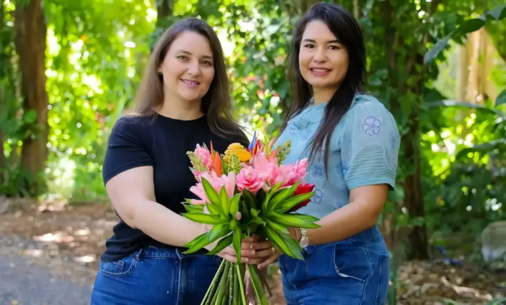

Fazendo História
Cientes da significativa demanda existente na capital e com uma abundante produção de flores na propriedade rural, as irmãs rapidamente optaram por inovar e criaram um clube de assinatura floral para atender a residências e empresas. A ideia foi bem-sucedida logo de início, atraindo os primeiros clientes do atelier. Com o tempo, uma nova estratégia foi sendo colocada em prática e a carteira de clientes da marca foi gradualmente ampliada. Hotéis que anteriormente adquiriam flores do Rancho Paraná antes da pandemia, por exemplo, foram contatados pela dupla e aderiram ao clube.
"Desde o início do nosso atendimento, percebi que o trabalho delas se destacava no Brasil e era verdadeiramente exclusivo aqui no DF. Sugeri que explorassem a possibilidade de ampliar a atuação e concentramos esforços na questão da assinatura floral”, relembra a agente de inovação."
Atualmente, o Atelier Florescer possui uma área de cultivo de 14 hectares, que está associada a um sistema de agrofloresta. As irmãs têm planos de expandir o serviço de assinatura, que atualmente oferece opções semanais, quinzenais e mensais disponíveis para contratação por meio das redes sociais da marca.